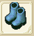
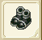
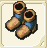
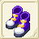
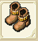
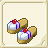

| 靴作成 | ||||
| 画像 | 日本語表示 | 性能 | 材料 | |
| 台湾名 | ||||
| 靴作成Lv1 | ||||
| 運動靴 | DEF+2〜+3 AGL+2〜+4 |
鹿の皮20 麻4 |
||
| 運動鞋 | ||||
| キャラバンシューズ | DEF+3〜+5 AGL+3〜+6 |
銅3 鹿の皮20 麻3 |
||
| 馬車鞋 | ||||
| 靴作成Lv2 | ||||
| 皮の靴 | DEF+3〜+6 AGL+4〜+8 |
鹿の皮20 麻4 木綿4 |
||
| 皮鞋 | ||||
|  | 安全靴 | DEF+4〜+8 AGL+6〜+10 |
鉄4 鹿の皮20 麻4 木綿3 |
|
| 安全鞋 | ||||
| 靴作成Lv3 | ||||
| ライトシューズ | DEF+5〜+9 AGL+8〜+12 |
鹿の皮20 麻5 木綿4 フェルト4 |
||
| 光之鞋 | ||||
| ウォーシューズ | DEF+7〜+12 AGL+10〜+14 |
銅4 鉄5 鹿の皮20 麻2 フェルト5 |
||
| 戰鞋 | ||||
| 靴作成Lv4 | ||||
| ラメラーシューズ | DEF+8〜+12 AGL+12〜+16 |
銅10 鉄3 銀3 鹿の皮20 コットン3 |
||
| 薄板鞋 | ||||
|  | チェインシューズ | DEF+9〜+14 AGL+14〜+18 |
銅10 鉄6 銀2 純銀2 フェルト2 |
|
| 鎖鏈鞋 | ||||
| クイーンブレス | RCV+2〜+5 CRI-1〜+1 CTR-1〜+1 HIT-1〜+1 AVD-1〜+1 クエストで使用 |
純銀5 銀1 金1 チタン鉱石20 フローズンアイリス20 |
||
| 靴作成Lv5 | ||||
| スケイルシューズ | DEF+11〜+14 AGL+16〜+20 |
銀5 純銀6 金3 フェルト6 |
||
| 蜥蝪鞋 | ||||
|  | バイキングシューズ | DEF+12〜+17 AGL+18〜+22 |
銅7 銀5 純銀5 金5 鹿の皮20 |
|
| 維京鞋 | ||||
|  | エーベンシューズ | DEF+13〜15 AGL+20〜24 MIND+8 LP-33 ステータスアップする 踊りスキルの成功率上昇 |
鹿の皮20 白金3 金2 純銀2 アルマイト3 |
|
| 特製舞鞋 | ||||
| 靴作成Lv6 | ||||
| バトルシューズ | DEF+13〜+18 AGL+20〜+24 |
鉄20 白金5 |
||
| 戰鬥鞋 | ||||
|  | ナイトソルレット | DEF+15〜+20 AGL+22〜+26 |
銀10 純銀8 白金5 鹿の皮20 |
|
| 騎士鞋 | ||||
| 靴作成Lv7 | ||||
| フェアリーステップ | DEF+17〜+23 AGL+24〜+30 |
純銀5 白金5 ミスリル鋼5 セレーネ糸3 |
||
| 妖精鞋 | ||||
| メテオソリッド | DEF+44〜+54 | 銀5 金5 ミスリル鋼8 隕石1 |
||
| 紫水晶鞋 | ||||
| 水龍の靴 | DEF+30 AGL+30 HIT+2 AVD+2 |
ホオノキ20 マイティナイト2 魔族のクリスタル2 擦り切れた靴1 |
||
| 水龍之鞋 | ||||
| 靴作成Lv8 | ||||
| メタルアンクル | DEF+20〜+26 AGL+26〜+32 |
純銀5 白金5 ミスリル銀5 ジェノーバスリード3 |
||
| 白金鞋 | ||||
| シェイドヒール | DEF+20〜+26 AGL-60 FP+90 |
ミスリル鋼10 ミスリル銀10 ボムのカード1 |
||
| 精緻高根鞋 | ||||
| フェアリーステップ＋ | DEF+17〜+24 AGL+34〜+40 CHM+1〜+3 |
ミスリル鋼5
ミスリル銀3 ブルードラゴンの鱗20 スワンプヴァイパー10 アルパネススリード17 |
||
| 妖精鞋+ | ||||
| 靴作成Lv9 | ||||
| フリップインパクト | DEF+20〜+29 AGL+30〜+38 |
ミスリル鋼5 レグネシウム4 絹5 アルパネッサ4 |
||
| 神秘之鞋 | ||||
| ライトジーン | DEF+23 AGL+30 POI+3 SLP+3 STN+3 |
レグネシウム10 セレーネ糸10 隕石1 マイティナイト2 |
||
| 力量之鞋 | ||||
| 靴作成Lv10 | ||||
| ラジェンドゥラ | DEF+26 AGL+39 |
ミスリル銀5 オリハルコン5 フェルト5 カシミア5 |
||
| ?金鞋 | ||||
| アフロディーテ | DEF+32〜+40 AGL+32〜+37 AVD+3 |
オリハルコン10 ジェノーバスリード10 誓いの証2 マイティナイト3 |
||
| 龍之鞋 | ||||
| 靴作成Lv11 | ||||
| ザイロ | DEF+12〜15 AGL+51〜74 AVD+17 |
アルパネススリード3 フレイムスピリッツ2 ミスリル銀8 レグネシウム8 ダマスクス鉱3 |
||
| 守護之鞋 | ||||
|  | ヨットサンダル | DEF+58〜67 AGL+13〜15 MND+6 CRI+6 |
アルマイト20 レグネシウム14 トネリコ40 シングロール40 ランドクローラーの甲殻2 |
|
| 大木屐 | ||||